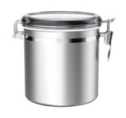

Materials
Instructions
For official government instructions, click here.
For more information about oxygen absorbers, click here.
For more information about food storage, click here.
To purchase long term storage food, click here.

Step 1:
- Clean with water and soap.
- 165 oz capacity.
- Resistant to earthquakes, rodents, and pests.
- Cannot store corrosive materials such as salt.

Step 2:
- Place the food you are storing in the container.
- Examples: rice, beans, pasta, flour etc.

Step 3:
- Place the oxygen absorber in the container.
- Place the appropriate amount of cc for the size of the container.
- About 300-500 cc to 1 gal of stored food.
- Not for use with sugars or salt.
- 1 gal = 128 oz.

Step 4:
- Notate what the food is.
- Notate when the food was stored.
- Research when you should rotate the food.
- Notate when to rotate the food.
- Store in cool dry place.
Processing Food
Wheat Grinder
- Can grind flour by hand.
- Can come with optional electric motor.
- Compact and more affordable than other wheat grinders.
Dutch Oven
- This oven can be heated without electricity.
- Can be heated over a fire and under charcoals.
- Pre-seasoned and ready to use in an emergency.
Can Opener
- Quality can opener.
- Important to have several for canned food storage.
- Made in USA.